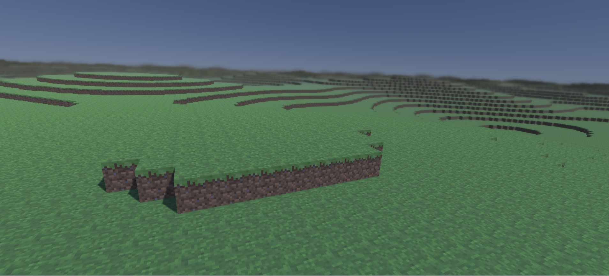
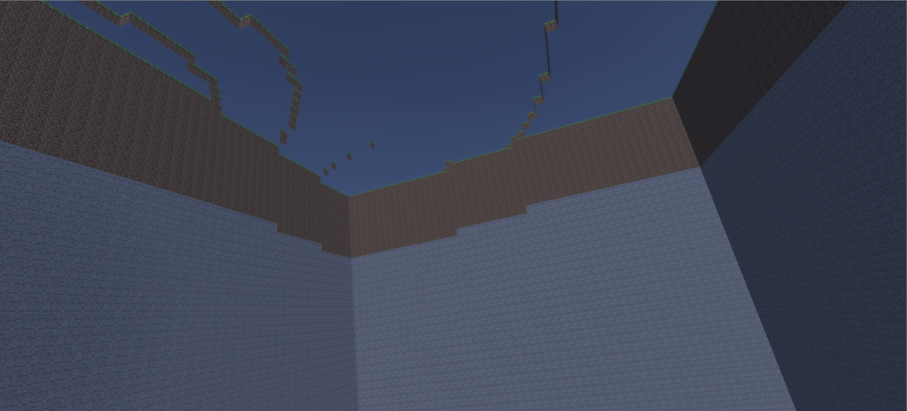

<!DOCTYPE html>
<html>
    <head>
        <title>Graphics Programming</title>
        <link href="proj.css" rel="stylesheet">
        <script src="https://unpkg.com/react@16.7.0/umd/react.development.js"></script>
        <script src="https://unpkg.com/react-dom@16.7.0/umd/react-dom.development.js"></script>
        <script src="https://unpkg.com/@babel/standalone/babel.min.js"></script>

    </head>
    <body>
        <div id="root"></div>
        <script type="text/babel">
        
            ReactDOM.render(
                <div>
                    <div class="topNavBar">
                    </div>
                    <div>
                        <ul>
                            <li><a class="navBarItem" href="index.html"></img></a></li>
                            <li><a class="navBarItem" href="Projects.html">School projects</a></li>
                            <li><a class="navBarItem" href="OtherProjects.html">Other projects</a></li>
                        </ul>
                    </div>
                    <h1>Graphics programming</h1>
                    <div class="content">
                        <div>
                            <div class="projInfo">
                                <h2>About</h2>
                                    <p>
                                        <strong>Year: </strong>2019<br />
                                        <strong>Made with: </strong> Unity; C#, Cg<br />
                                        <br />For this class the main objective was to learn the basic techniques to create nice graphics in a game
                                        while still maintaining a high framerate to make games both look nice and run smoothly.<br />
                                        <br />I generated kind of a voxel/minecraft world as a single mesh. Only the triangles that are actually visible for the 
                                        camera are being rendered. I did not make the world interactable, but it can easily be implemented to make removable blocks.
                                        The shape of the chunk is created by using Unity's perlin noise. For the water I wrote a shader which uses an algorithm to
                                        create Gerstner waves, which makes the water appear to move realistically. I also made a post processing effect using the
                                        zbuffer and Gaussian kernel to make objects in the distance blurry. To improve the performance I also applied things such as
                                        mipmaps, texture atlas and I concidered the filtering methods of the textures.
                                    </p>
                                    </img>
                            </div>
                        </div>
                        <div class="row">
                            <h2>Gallery</h2>
                            <div class="column"></img></div>
                            <div class="column"></img></div>
                        </div>
                    </div>
                </div>,
                document.getElementById("root")
            );
        </script>
    </body>
</html>